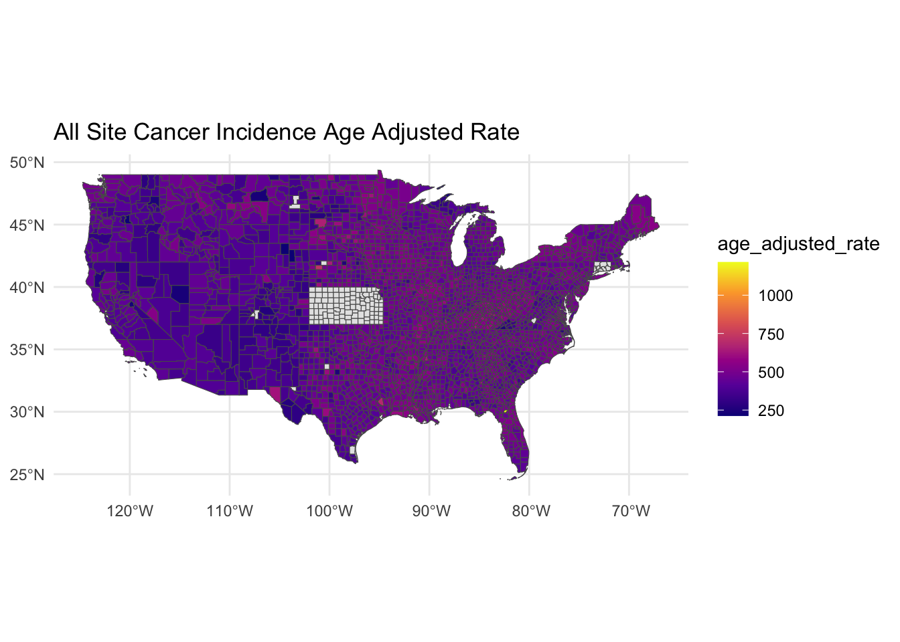
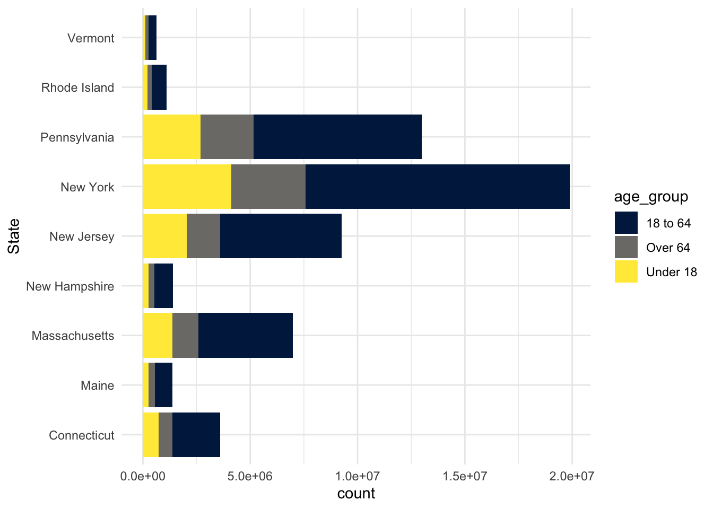
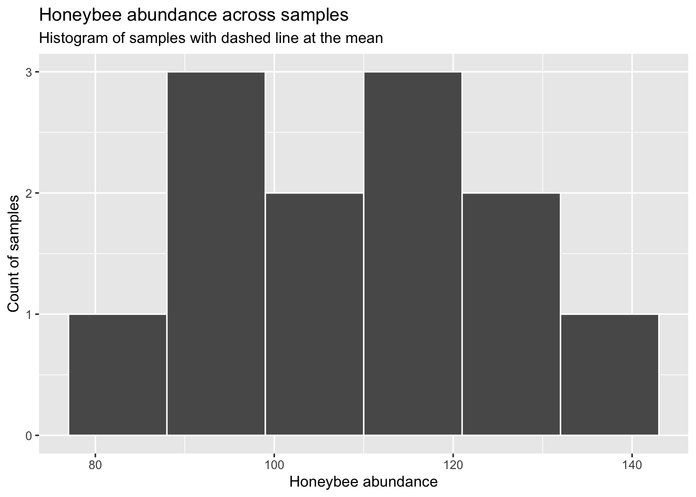
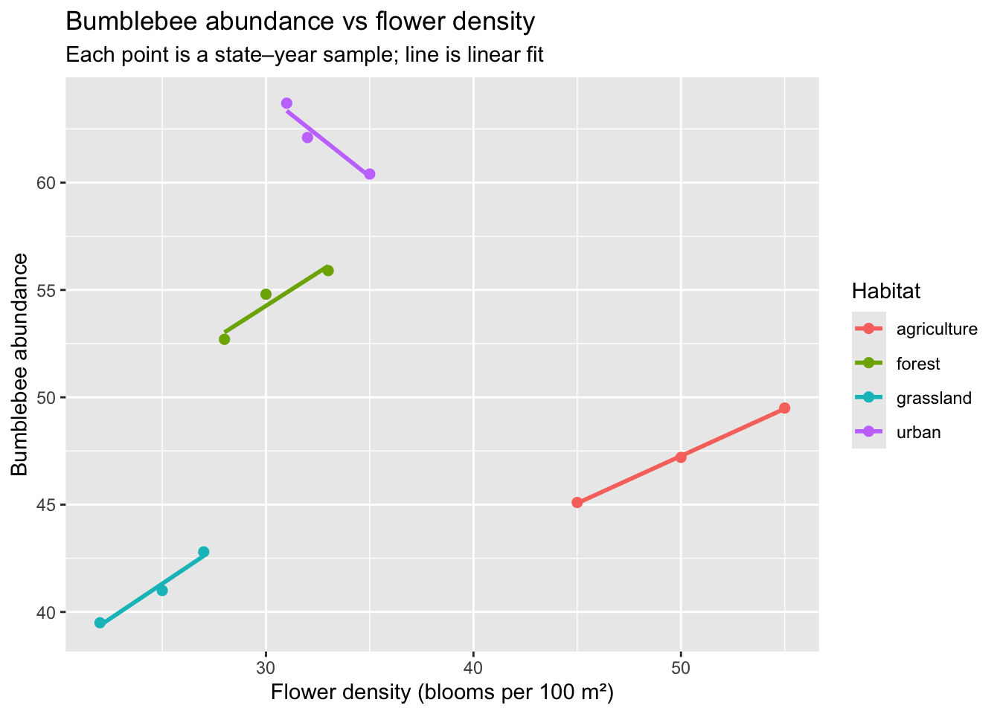
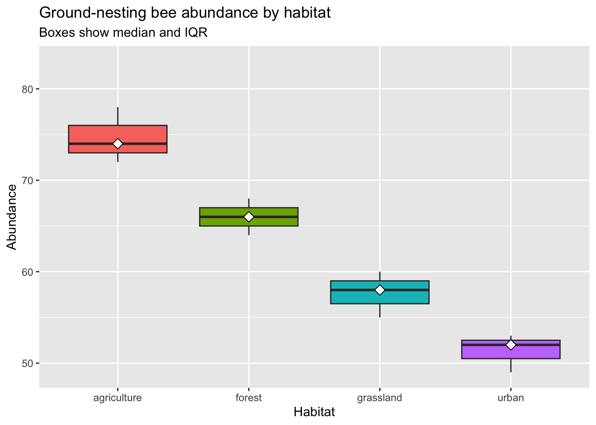
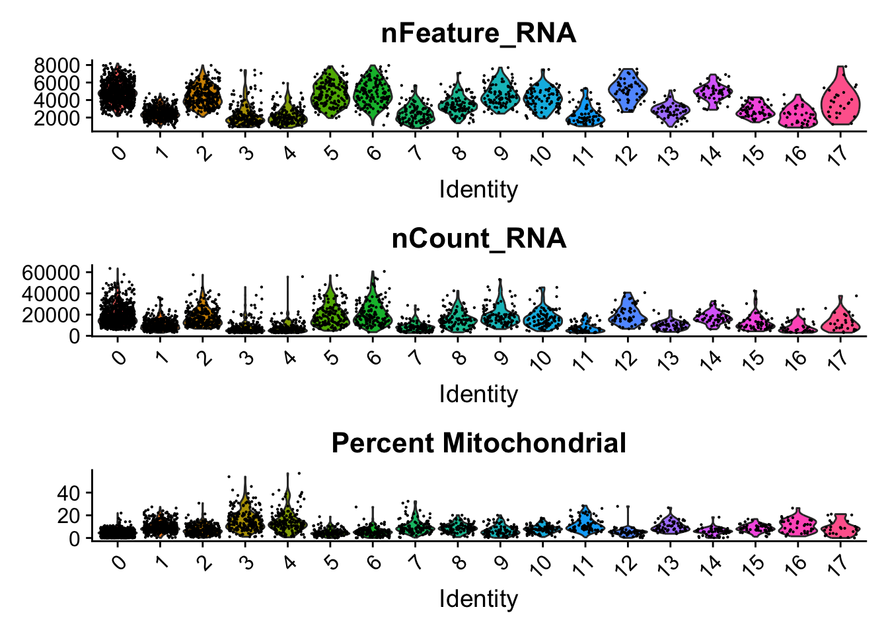
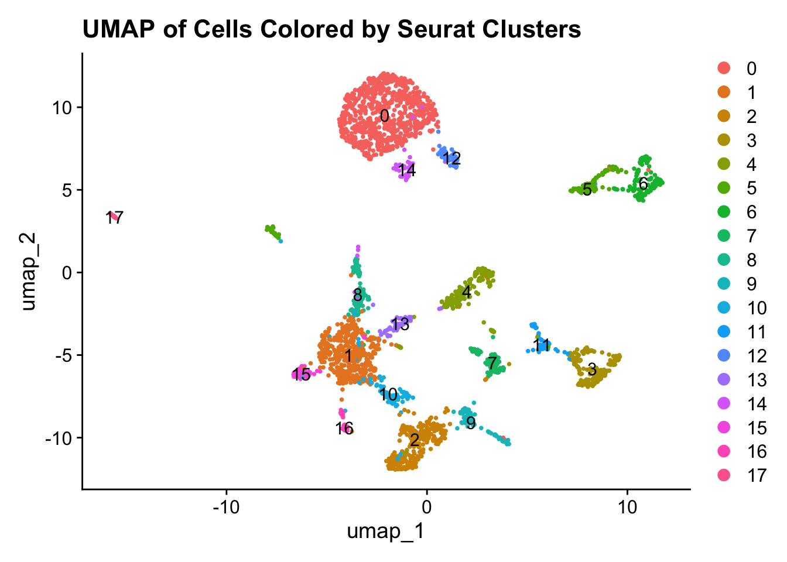

── Attaching core tidyverse packages ──────────────────────── tidyverse 2.0.0 ──
✔ dplyr 1.1.4 ✔ readr 2.1.5
✔ forcats 1.0.0 ✔ stringr 1.5.1
✔ ggplot2 3.5.2 ✔ tibble 3.3.0
✔ lubridate 1.9.4 ✔ tidyr 1.3.1
✔ purrr 1.0.4
── Conflicts ────────────────────────────────────────── tidyverse_conflicts() ──
✖ dplyr::filter() masks stats::filter()
✖ dplyr::lag() masks stats::lag()
ℹ Use the conflicted package (<http://conflicted.r-lib.org/>) to force all conflicts to become errors
Tidyverse data wrangling with cancer incidence and population demographic data
In this section we will use functions from the tidyverse library “wrangle” population-level cancer and demographic data. Data wrangling refers to manipulating and reformatting data.
# Create a text string with the path to the cancer incidence datadata_path <-file.path("data", "us_cancer_incidence_county_09-04-2025.csv")print(data_path)
Use the file path we constructed to read in the table using read.csv. You can see that we retrieved a wide format table, where the “FIPS” and “County” fields serve as IDs for each. Each also has a field for each cancer type e.g. “All Site”, “Bladder”, “Brain & ONS”, ect.
FIPS County State Type RE Sex
1 1001 Autauga County Alabama Incidence All All
2 1001 Autauga County Alabama Incidence All Female
3 1001 Autauga County Alabama Incidence All Male
4 1001 Autauga County Alabama Incidence American Indian/Alaska Native NH All
5 1001 Autauga County Alabama Incidence American Indian/Alaska Native NH Female
6 1001 Autauga County Alabama Incidence American Indian/Alaska Native NH Male
AYA (15-39 years) Alcohol-associated All Site All Site (18-49 years)
1 94.8902 134.8711 459.6583 173.4742
2 123.7479 180.6734 426.4733 221.9220
3 64.8128 84.0777 508.6337 122.0667
4 NA NA NA NA
5 NA NA NA NA
6 NA NA NA NA
All Site (65+ years) Bladder Bladder (18-49 years) Bladder (65+ years)
1 1880.084 15.2621 NA 87.9906
2 1505.317 NA NA NA
3 2386.425 25.6987 NA 160.3674
4 NA NA NA NA
5 NA NA NA NA
6 NA NA NA NA
Brain & ONS Brain & ONS (18-49 years) Brain & ONS (65+ years) Cervix
1 5.916 NA NA NA
2 NA NA NA NA
3 NA NA NA NA
4 NA NA NA NA
5 NA NA NA NA
6 NA NA NA NA
Cervix (18-49 years) Cervix (21-65 years) Cervix (65+ years)
1 NA NA NA
2 NA NA NA
3 NA NA NA
4 NA NA NA
5 NA NA NA
6 NA NA NA
Cervix (Early Stage) Cervix (Late Stage) Colon & Rectum
1 NA NA 41.9540
2 NA NA 39.4591
3 NA NA 45.6285
4 NA NA NA
5 NA NA NA
6 NA NA NA
Colon & Rectum (18-49 years) Colon & Rectum (45-75 years)
1 16.4466 81.8518
2 NA 73.5568
3 NA 89.7084
4 NA NA
5 NA NA
6 NA NA
Colon & Rectum (65+ years) Colon & Rectum (Early Stage)
1 177.5225 15.0965
2 162.3594 13.0590
3 202.4964 17.5283
4 NA NA
5 NA NA
6 NA NA
Colon & Rectum (Late Stage) Corpus Uteri & Uterus, NOS
1 21.4683 20.3138
2 20.9890 20.3138
3 22.5108 NA
4 NA NA
5 NA NA
6 NA NA
Corpus Uteri & Uterus, NOS (18-49 years)
1 NA
2 NA
3 NA
4 NA
5 NA
6 NA
Corpus Uteri & Uterus, NOS (65+ years) Esophagus Esophagus (18-49 years)
1 NA 6.7185 NA
2 NA NA NA
3 NA 9.5300 NA
4 NA NA NA
5 NA NA NA
6 NA NA NA
Esophagus (65+ years) Female Breast Female Breast (18-49 years)
1 36.8918 124.8672 62.3989
2 NA 124.8672 62.3989
3 NA NA NA
4 NA NA NA
5 NA NA NA
6 NA NA NA
Female Breast (40-74 years) Female Breast (65+ years)
1 245.985 382.4438
2 245.985 382.4438
3 NA NA
4 NA NA
5 NA NA
6 NA NA
Female Breast (Early Stage) Female Breast (Late Stage) HPV-associated
1 78.6696 41.5186 11.9348
2 78.6696 41.5186 15.5777
3 NA NA 7.8928
4 NA NA NA
5 NA NA NA
6 NA NA NA
Head and Neck Hematologic Malignancies Hodgkin Lymphoma
1 24.1449 44.4204 NA
2 23.6260 30.5602 NA
3 26.1598 62.4301 NA
4 NA NA NA
5 NA NA NA
6 NA NA NA
Hodgkin Lymphoma (18-49 years) Hodgkin Lymphoma (65+ years)
1 NA NA
2 NA NA
3 NA NA
4 NA NA
5 NA NA
6 NA NA
Kidney & Renal Pelvis Kidney & Renal Pelvis (18-49 years)
1 20.1204 NA
2 11.4440 NA
3 29.4414 NA
4 NA NA
5 NA NA
6 NA NA
Kidney & Renal Pelvis (65+ years) Leukemia Leukemia (18-49 years)
1 61.0561 15.5868 NA
2 NA 12.7013 NA
3 83.3929 19.5002 NA
4 NA NA NA
5 NA NA NA
6 NA NA NA
Leukemia (65+ years) Liver & IBD Liver & IBD (18-49 years)
1 67.5969 7.2661 NA
2 NA NA NA
3 95.3588 11.0120 NA
4 NA NA NA
5 NA NA NA
6 NA NA NA
Liver & IBD (65+ years) Lung & Bronchus Lung & Bronchus (18-49 years)
1 36.6144 62.4633 NA
2 NA 56.3736 NA
3 NA 70.7731 NA
4 NA NA NA
5 NA NA NA
6 NA NA NA
Lung & Bronchus (50-80 years) Lung & Bronchus (65+ years)
1 199.4958 319.6382
2 170.9392 275.5086
3 234.2599 380.9893
4 NA NA
5 NA NA
6 NA NA
Lung & Bronchus (Early Stage) Lung & Bronchus (Late Stage)
1 14.9869 41.6762
2 14.8230 35.5661
3 15.9459 49.6848
4 NA NA
5 NA NA
6 NA NA
Melanoma of the Skin Melanoma of the Skin (18-49 years)
1 22.8855 16.9107
2 24.1056 NA
3 23.2429 NA
4 NA NA
5 NA NA
6 NA NA
Melanoma of the Skin (65+ years) Myeloma Myeloma (18-49 years)
1 63.9812 9.5101 NA
2 NA NA NA
3 103.6040 13.9125 NA
4 NA NA NA
5 NA NA NA
6 NA NA NA
Myeloma (65+ years) Neuroendocrine Tumors Non-Hodgkin Lymphoma
1 44.0245 10.0673 15.8498
2 NA 9.5227 10.0924
3 NA 10.8471 23.6098
4 NA NA NA
5 NA NA NA
6 NA NA NA
Non-Hodgkin Lymphoma (18-49 years) Non-Hodgkin Lymphoma (65+ years)
1 NA 89.1058
2 NA NA
3 NA 141.4318
4 NA NA
5 NA NA
6 NA NA
Obesity-associated Oral Cavity & Pharynx Oral Cavity & Pharynx (18-49 years)
1 176.5714 10.3504 NA
2 221.8295 NA NA
3 125.6003 16.2387 NA
4 NA NA NA
5 NA NA NA
6 NA NA NA
Oral Cavity & Pharynx (65+ years) Ovary Ovary (18-49 years)
1 NA 13.9549 NA
2 NA 13.9549 NA
3 NA NA NA
4 NA NA NA
5 NA NA NA
6 NA NA NA
Ovary (65+ years) Pancreas Pancreas (18-49 years) Pancreas (65+ years)
1 NA 14.7776 NA 69.3483
2 NA 14.3308 NA 65.7642
3 NA 15.2299 NA NA
4 NA NA NA NA
5 NA NA NA NA
6 NA NA NA NA
Pediatric (0-14 years) Pediatric (0-19 years) Prostate Prostate (18-49 years)
1 NA NA 129.8768 NA
2 NA NA NA NA
3 NA NA 129.8768 NA
4 NA NA NA NA
5 NA NA NA NA
6 NA NA NA NA
Prostate (65+ years) Stomach Stomach (18-49 years) Stomach (65+ years)
1 639.095 6.3646 NA NA
2 NA NA NA NA
3 639.095 NA NA NA
4 NA NA NA NA
5 NA NA NA NA
6 NA NA NA NA
Thyroid Thyroid (18-49 years) Thyroid (65+ years) Tobacco-associated
1 9.6600 NA NA 196.3504
2 15.1733 NA NA 164.4880
3 NA NA NA 237.1356
4 NA NA NA NA
5 NA NA NA NA
6 NA NA NA NA
We are also reading in population demographic counts for each county. We will save this table for later.
Our cancer incidence table is in wide format, but we want long format. We used the pivot_longer function from tidyr package to convert us_cancer_incidence_county from wide to long format.
# Get columns that we will pivot to long formatcolumns <-colnames(us_cancer_incidence_county) # Get all columnscolumns <- columns[!columns %in%c("FIPS", "County", "State", "Type", "RE", "Sex")] # Filter out columns that we are not pivoting to long format # Pivot the table to long formatus_cancer_incidence_county_long <- us_cancer_incidence_county |> tidyr::pivot_longer(cols =-c(FIPS, County, State, Type, RE, Sex), # Specify which columns are serve as row IDs and are not pivoted to long formatnames_to ="cancer_site", # Store the old column names in the new "cancer_site' columnvalues_to ="age_adjusted_rate") # Store the old column values in the new "age_adjusted_rate' columnprint(head(us_cancer_incidence_county_long))
# A tibble: 6 × 8
FIPS County State Type RE Sex cancer_site age_adjusted_rate
<int> <chr> <chr> <chr> <chr> <chr> <chr> <dbl>
1 1001 Autauga County Alabama Incide… All All AYA (15-39… 94.9
2 1001 Autauga County Alabama Incide… All All Alcohol-as… 135.
3 1001 Autauga County Alabama Incide… All All All Site 460.
4 1001 Autauga County Alabama Incide… All All All Site (… 173.
5 1001 Autauga County Alabama Incide… All All All Site (… 1880.
6 1001 Autauga County Alabama Incide… All All Bladder 15.3
TODO: Pivot gene_expression_wide to long format, using tidyr::pivot_longer
The us_cancer_incidence_county_long table has some values in the “cancer_site” column that we are not interested in. Use the filter function from the dplyr library to remove rows with certain values in the “cancer_site” column.
# Get a vector of all values in "cancer_site" that end with ")"# We want to remove "cancer_site" values with parentheses like "Bladder (18-49 years)"cancer_site_values <-unique(us_cancer_incidence_county_long$cancer_site) # Get all unique values in the "cancer_site" columncancer_site_values_with_parentheses <- cancer_site_values[endsWith(cancer_site_values, ")")]print(paste0("We are removing rows with these values: '",paste(cancer_site_values_with_parentheses, collapse ="', '"),"'"))
# Filter out rows where "cancer_site" is in cancer_site_values_with_parenthesesus_cancer_incidence_county_long <- us_cancer_incidence_county_long |> dplyr::filter(!cancer_site %in% cancer_site_values_with_parentheses)print(head(us_cancer_incidence_county_long))
# A tibble: 6 × 8
FIPS County State Type RE Sex cancer_site age_adjusted_rate
<int> <chr> <chr> <chr> <chr> <chr> <chr> <dbl>
1 1001 Autauga County Alabama Incide… All All Alcohol-as… 135.
2 1001 Autauga County Alabama Incide… All All All Site 460.
3 1001 Autauga County Alabama Incide… All All Bladder 15.3
4 1001 Autauga County Alabama Incide… All All Brain & ONS 5.92
5 1001 Autauga County Alabama Incide… All All Cervix NA
6 1001 Autauga County Alabama Incide… All All Colon & Re… 42.0
TODO: Filter gene_expression_wide to only include the following GSMs: “GSM2804844”, “GSM2804845.”
Since we are curious, lets count the number of people in each age group in each state using data from us_sociodemographics_county.
# Convert age count fractions to counts by multiplying the fractions by the total population count for each countyus_sociodemographics_county_age <- us_sociodemographics_county |> dplyr::mutate(`Under 18`=`Under 18`* Total,`18 to 64`=`18 to 64`* Total,`Over 64`=`Over 64`* Total)# Use dplyr::group_by to specify the grouping columns# Use dplyr::summarise to sum the counts in each stateus_sociodemographics_state_age_counts <- us_sociodemographics_county_age |> dplyr::group_by(State) |> dplyr::summarise(`Under 18`=sum(`Under 18`),`18 to 64`=sum(`18 to 64`),`Over 64`=sum(`Over 64`))print(head(us_sociodemographics_state_age_counts))
TODO: Summarize mean yearly bee abundance by state. Hint: first calculate total abundance from the “honeybee_abundance” and “bumblebee_abundance” columns by summing with mutate. Then calculate mean abundance using dplyr::group_by, dplyr::summarize, and base::mean.
In this section we will create figures that visualize the cancer incidence and population demographic data we curated in the previous step.
library(sf)
Linking to GEOS 3.13.1, GDAL 3.11.0, PROJ 9.6.2; sf_use_s2() is TRUE
library(ggplot2)library(tigris)
To enable caching of data, set `options(tigris_use_cache = TRUE)`
in your R script or .Rprofile.
# Get county polygons with FIPS GEOID# Exclude AK, HI, PR, and territories for a compact continental viewcounties_sf <-counties(cb =TRUE, resolution ="5m", year =2023, class ="sf")
counties_sf_filt <- counties_sf|># Filter out states that are not in the contiguous US dplyr::filter(!STATEFP %in%c("02","15","60","66","69","72","78")) |># Combine the state and county FIPS code dplyr::mutate(FIPS =as.integer(paste0(STATEFP, COUNTYFP))) |> dplyr::select(FIPS, geometry)# Filter us_cancer_incidence_county_long to only include all site cancer incidence ratesus_cancer_incidence_county_all <- us_cancer_incidence_county_long |> dplyr::filter(RE =="All", Sex =="All", cancer_site =="All Site")# Merge the map geometry with the cancer incidence datamap_data <-merge(counties_sf_filt, us_cancer_incidence_county_all,by ="FIPS",all.x =TRUE)ggplot(map_data) +geom_sf(aes(fill = age_adjusted_rate), size =0.05) +scale_fill_viridis_c(option ="plasma", na.value ="grey90") +coord_sf() +theme_minimal() +ggtitle("All Site Cancer Incidence Age Adjusted Rate")

Create a bar graph that shows the count of each age in northeast states.
# pivot us_sociodemographics_state_age_counts_long to long formatus_sociodemographics_state_age_counts_long <- us_sociodemographics_state_age_counts |> tidyr::pivot_longer(cols =-State,names_to ="age_group",values_to ="count")# Filter table to keep only northeast statesnortheast_states <-c("Connecticut","Maine","Massachusetts","New Hampshire","Rhode Island","Vermont","New Jersey","New York","Pennsylvania")us_sociodemographics_state_age_counts_long <- us_sociodemographics_state_age_counts_long |>filter(State %in% northeast_states)# Plot the age countsggplot(data = us_sociodemographics_state_age_counts_long) +geom_col(aes(x = State, y = count, fill = age_group)) +coord_flip() +scale_fill_viridis_d(option ="cividis") +theme_minimal()

TODO: Create a bar graph with “year” on the x-axis and “ground_nesting_bee_abundance” on the y-axis.
Histogram: counts of samples by honeybee abundance bin, with mean annotated
ggplot(bees, aes(honeybee_abundance)) +geom_histogram(binwidth =11, boundary =0, color ="white") +labs(title ="Honeybee abundance across samples",subtitle ="Histogram of samples with dashed line at the mean",x ="Honeybee abundance", y ="Count of samples")

Scatter plot: bumblebee abundance vs floral resources, with linear trend and note
ggplot(bees, aes(flower_density, bumblebee_abundance, color = habitat)) +geom_point(size =2) +geom_smooth(method ="lm", se =FALSE) +labs(title ="Bumblebee abundance vs flower density",subtitle ="Each point is a state–year sample; line is linear fit",x ="Flower density (blooms per 100 m²)", y ="Bumblebee abundance",color ="Habitat")
`geom_smooth()` using formula = 'y ~ x'

Box plot: ground-nesting bee abundance by habitat, with highest median flagged
ggplot(bees, aes(habitat, ground_nesting_bee_abundance, fill = habitat)) +geom_boxplot(outlier.alpha =0.6) +stat_summary(fun = median, geom ="point", shape =23, size =3, fill ="white") +expand_limits(y =max(bees$ground_nesting_bee_abundance) +5) +labs(title ="Ground-nesting bee abundance by habitat",subtitle ="Boxes show median and IQR",x ="Habitat", y ="Abundance") +theme(legend.position ="none")

Single-cell analysis with Seurat
Load in packages and single-cell data.
library(Seurat)
Loading required package: SeuratObject
Loading required package: sp
Attaching package: 'SeuratObject'
The following objects are masked from 'package:base':
intersect, t
library(scRNAseq)
Loading required package: SingleCellExperiment
Loading required package: SummarizedExperiment
Loading required package: MatrixGenerics
Loading required package: matrixStats
Attaching package: 'matrixStats'
The following object is masked from 'package:dplyr':
count
The following objects are masked from 'package:lubridate':
second, second<-
The following objects are masked from 'package:dplyr':
first, rename
The following object is masked from 'package:tidyr':
expand
The following object is masked from 'package:utils':
findMatches
The following objects are masked from 'package:base':
expand.grid, I, unname
Loading required package: IRanges
Attaching package: 'IRanges'
The following object is masked from 'package:sp':
%over%
The following object is masked from 'package:lubridate':
%within%
The following objects are masked from 'package:dplyr':
collapse, desc, slice
The following object is masked from 'package:purrr':
reduce
Loading required package: GenomeInfoDb
Loading required package: Biobase
Welcome to Bioconductor
Vignettes contain introductory material; view with
'browseVignettes()'. To cite Bioconductor, see
'citation("Biobase")', and for packages 'citation("pkgname")'.
Attaching package: 'Biobase'
The following object is masked from 'package:MatrixGenerics':
rowMedians
The following objects are masked from 'package:matrixStats':
anyMissing, rowMedians
Attaching package: 'SummarizedExperiment'
The following object is masked from 'package:Seurat':
Assays
The following object is masked from 'package:SeuratObject':
Assays
Found more than one class "package_version" in cache; using the first, from namespace 'SeuratObject'
Also defined by 'alabaster.base'
Found more than one class "package_version" in cache; using the first, from namespace 'SeuratObject'
Also defined by 'alabaster.base'
Found more than one class "package_version" in cache; using the first, from namespace 'SeuratObject'
Also defined by 'alabaster.base'
Found more than one class "package_version" in cache; using the first, from namespace 'SeuratObject'
Also defined by 'alabaster.base'
# Use gene symbols as rownames if available to ensure nice plotting and markersif ("feature_symbol"%in%colnames(rowData(sce_zeisel_brain))) { gene_symbols <-rowData(sce_zeisel_brain)$feature_symbolrownames(sce_zeisel_brain) <-make.unique(ifelse(is.na(gene_symbols) | gene_symbols =="", rownames(sce_zeisel_brain), gene_symbols))}
This step pulls the raw counts, converts them to a memory-efficient sparse matrix, and wraps them into a Seurat object with basic quality filters applied.
# Convert counts to sparse matrix and then to Seuratcounts_matrix <-assay(sce_zeisel_brain, "counts")if (!inherits(counts_matrix, "dgCMatrix")) counts_matrix <-Matrix(as.matrix(counts_matrix), sparse =TRUE)if (is.null(colnames(counts_matrix))) colnames(counts_matrix) <-paste0("cell_", seq_len(ncol(counts_matrix)))seurat_object <-CreateSeuratObject(counts = counts_matrix, project ="zeisel", min.cells =3, min.features =200)
Warning: Feature names cannot have underscores ('_'), replacing with dashes
('-')
Calculate, for each cell, the proportion of transcripts that come from mitochondrial genes, which serves as a quality control metric because cells with unusually high mitochondrial content are often stressed, damaged, or dying.
# Compute percent_mt using a case insensitive mt prefix and perform sanity checksmt_regex_pattern <-"(?i)^mt-"gene_is_mitochondrial <-grepl(mt_regex_pattern, rownames(seurat_object))mitochondrial_gene_symbols <-rownames(seurat_object)[gene_is_mitochondrial]mitochondrial_gene_count <-length(mitochondrial_gene_symbols)# Print a short summary with interpretationcat("Mitochondrial genes matched by regex:", mitochondrial_gene_count, "\n")
Mitochondrial genes matched by regex: 34
cat("Expect roughly 13 for human or about 37 for mouse depending on annotation", "\n")
Expect roughly 13 for human or about 37 for mouse depending on annotation
# Warn on suspicious counts and suggest next stepsif (mitochondrial_gene_count ==0) {warning("No mitochondrial genes matched. Check feature naming or use chromosome based annotations")}if (mitochondrial_gene_count <8&& mitochondrial_gene_count >0) {warning("Very few mitochondrial genes detected. Verify gene symbols or genome build")}if (mitochondrial_gene_count >50) {warning("Unusually many mitochondrial genes detected. Check for duplicated or misannotated features")}# Add percent_mt using the exact matched gene listseurat_object[["percent_mt"]] <-PercentageFeatureSet( seurat_object,features = mitochondrial_gene_symbols)
Warning: The default method for RunUMAP has changed from calling Python UMAP via reticulate to the R-native UWOT using the cosine metric
To use Python UMAP via reticulate, set umap.method to 'umap-learn' and metric to 'correlation'
This message will be shown once per session
Warning: The `slot` argument of `FetchData()` is deprecated as of SeuratObject 5.0.0.
ℹ Please use the `layer` argument instead.
ℹ The deprecated feature was likely used in the Seurat package.
Please report the issue at <https://github.com/satijalab/seurat/issues>.
Warning: `PackageCheck()` was deprecated in SeuratObject 5.0.0.
ℹ Please use `rlang::check_installed()` instead.
ℹ The deprecated feature was likely used in the Seurat package.
Please report the issue at <https://github.com/satijalab/seurat/issues>.

Plot UMAP cell clusters.
print(DimPlot( seurat_object,reduction ="umap",label =TRUE ) +ggtitle("UMAP of Cells Colored by Seurat Clusters"))

Make a multi-faceted UMAP plot that highlights the expression of cell-type marker genes. If a cluster shows high expression of a well-established marker gene, it suggests that the cluster is enriched for the corresponding cell type.
# Plot feature expression for common mouse markers or fallback to variable featurescandidate_markers <-c("Gad1","Gad2","Slc17a7","Sst","Pcp4","Aqp4","Gfap","Mog","Plp1","C1qa","C1qb","Lyz2","Tyrobp","P2ry12","Reln")selected_features <-intersect(candidate_markers, rownames(seurat_object))if (length(selected_features) ==0) selected_features <-head(VariableFeatures(seurat_object), 6)print(FeaturePlot( seurat_object,features =head(selected_features, 6),ncol =3 ) +ggtitle("Expression of Selected Marker Genes"))